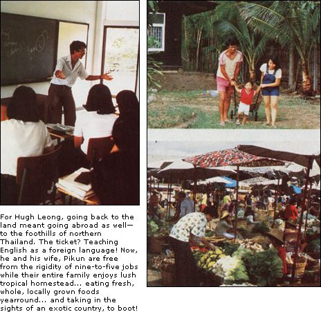

My wife, Pikun, and I had to travel halfway around the world before discovering the good life. However, while sitting here on our peaceful veranda in northern Thailand, I'm not a bit sorry we had to come so far to find so much! In fact, as I gaze out over the gentle stream flowing by me on the left or at the foothills of the Himalayas rising up on the right, I can hardly believe that we were ever hardcore, apartment-dwelling New Yorkers.
Back in those days we figured we had it made. We both had "good" jobs with "great" potential: I was a psychotherapist for the New York State Department of Mental Hygiene, and Pikun was employed in the diamond industry in midtown Manhattan. Still, despite our complacency, we were always wondering if our lives were really all they should be. After all, the only thing we actually had to look forward to was yet another nine-to-five day.
Fortunately, during that time I had the foresight to get my M.A. in teaching English as a foreign language. I figured that this degree would be a sure ticket to almost anywhere in the world . . . just in case we should ever want to abandon our urban lifestyle.
Well, we did leave . . . over four years ago. And thanks to my teaching vocation, neither of us has had to work an eight-hour day since! Currently, Pikun, our two children (both born abroad), and I live on a quarter-acre of land in Chiengmai, Thailand. We eat fresh foods almost exclusively (everyone does over here), and we have plenty of time to enjoy our family life, the interesting places around us, and our many friendly neighbors.
THE INSIDE TRACK
The trick to surviving abroad is to have a salable skill. And a knowledge of English is just such a commodity, because it can lead to employment in many countries. Of course, in some places it does help to have credentials and experience, but in others-where the need for learning English is greater-practically anyone who can speak the language can land a job. For example, in Tokyo, Singapore, and Rio, some businessmen will pay upwards of $15 an hour to hire someone who'll just sit and talk to them in English! Even many universities in Asia, Africa, and South America hire Americans (regardless of experience) to teach courses parttime.
The pay range for teaching English varies, of course, depending on who the employer happens to be. I was once offered $30,000 a year to work for a company in Saudi Arabia, but I turned it down because of the political situation in the country at the time. I have one friend who teaches 35 hours a week in Tokyo, and he brings home about $2,000 a month. Yet another friend prefers to take life a little easier, and she earns only enough money to cover her room and board.
All in all, just about every American I've run into who's been on an extended journey has paid for part of his or her way by teaching English at one time or another.
OUR FUTURE
Living abroad has taught Pikun and me a lot about what's really important in life. It's given us, for example, time to enjoy nature and the company of family and friends. At the moment we're only renting our little homestead, because our future plans involve more traveling. (My wife is originally from Thailand; my father was Chinese, and my mother was a South Carolina farm girl. So I guess you could say we've got internationalism in our blood!) We may move to Japan or Fiji or even Brazil before finally returning to the States in time to put our youngsters (who are still toddlers) into school.
On the whole, we've found peace of mind here, as well as much-needed confidence in the fact that we really can lead simpler lives, and neither of us plans to ever go back to the city and full-time employment again. Perhaps we'll invest in a bit of land, settle down, and open up a home business. But that's in the future, and nowadays we live mostly in the present . . . looking forward to each moment as it comes to us.
EDITOR'S NOTE: As Hugh noted, often the mere knowledge of spoken English is enough to land a teaching job, provided you're in the right place at the right time. However, if you wish to arrange employment abroad before you hit the road, employers may require you to have a B.A. degree (in any subject, though of course one in English is best) . . . perhaps a teaching certificate . . . and maybe even a couple of years' experience. Check the accompanying sidebar for more details.
United States Information Agency
Washington, DC 20547
This organization will put you in touch with Binational Centers (BNC) all over the world. BNC's are autonomous institutions operated by associations of local citizens and American residents, and are established for the purpose of fostering better international understanding. These centers hire teachers locally (and will usually hire you on the spot if you're a native speaker of English). You can also write ahead to the center of your choice. In either case, no placement fee is charged.
Peace Corps
806 Connecticut Ave. N. W.
Washington, DC 20525
In order to get a job with these folks, you must have a degree and you must be in the United States when you apply (since you'll be required to take part in a training program). The pay scale for Peace Corps workers is relatively low, since it mirrors the income of the people of the host country. However, the organization does provide a sort of "readjustment allowance" when your job stint is over, to help you out when you first come back to the States.
YMCA International Student Service
236 E. 47th St.
New York, NY 10017
or
YMCA of the USA
101 N. Wacker Dr.
Chicago, IL 60606
The YMCA sponsors many different programs with varying requirements (though a college degree is necessary for every position).
Teachers of English to Speakers of Other Languages (TESOL)
202 D.C. Transit Building
Georgetown University
Washington, DC 20057
Members of TESOL get bi-monthly lists of job openings abroad and are entitled to discounts on the organization's publications concerning teaching English and other pertinent matters. Although the people at TESOL will not actually match you up with a job, they will-once you send in your $33 yearly membership fee plus a $3 filing charge, along with your resume-add your name to a computer list that is available to employers all over the world.
International Schools Services
P.O. Box 5910
Princeton, NJ 08540
T hese folks will match you up with a job, if you qualify. They do all the contacting with overseas employers and sponsor an annual recruitment session in the U.S., in which all their interviewing for work abroad takes place. However, they require you to have a B.A. or B.S. degree, plus certification and two years' experience. They also charge a $50 (nonrefundable) processing fee.
EDITOR'S NOTE: We contacted each of these nonprofit organizations and found their personnel to be extremely helpful and very prompt in sending us their brochures and application information. So should you be interested in any or all of the above, we recommend that you get in touch with these friendly folks. They're happy to answer all questions (even the ones you can't quite put into words).
|
|
 |
|